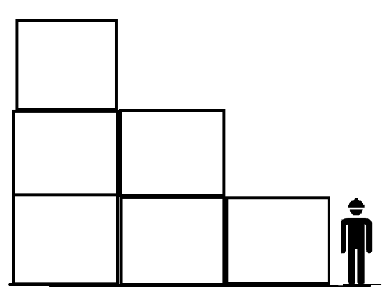

Hay estibas junto a pasos peatonales que si se produjera un derrumbamiento pondría en peligro la integridad de una persona. Al ser expresada esta preocupación se me comento que era 99% imposible que la estiba se cayera. Al igual que se siguen las indicaciones de estibamiento máximo impreso en las cajas calidad al encontrar incidencias” mercancía inclinada que amaneza con caerse levanta un reporte”

Estiba encima de la altura de una persona que al producirse un derrumbamiento pondría en peligro la integridad de una persona
Estibar de forma decreciente, la mercancía próxima a el pasillo peatonal que se encuentre al nivel de suelo y conforme se vaya alejando que se estibe a su altura máxima
Reducir una condición insegura de trabajo.
Esta recomendación la brindo desde mi experiencia profesional y lógica.